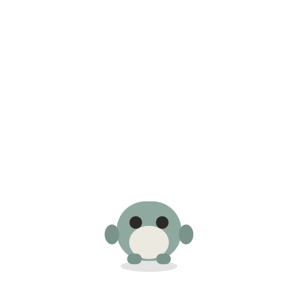

Claude
Claude&Mistyrain

自动
开启 Thinking
关闭 Thinking
搜索
导出当前聊天
留言板
容量
备注
收纳
删除当前窗口
设置
留言板
搜索
Claude
聊天
待办
日历
购物
日记
照片与回忆
共读
背单词
健康
卡片
Recents
Claude
Me
设置
账号
用户
本机
用量
›
家
助手
Claude
›
长期记忆
0 条
›
世界书
0 本
›
数据与备份
›
手机通知
检查中
›
运行检查
点一下检查
夜里让他自己醒
自主活动
关着
›
查岗
关着
›
现实环境
未设置
›
MCP 工具
0 个
›
临时接管浏览器
关着
›
小克的声音
未设置
›
夜间模式
接入 API
…
›
手机通知
查岗
购物
自主活动 · 积温
小克的声音
MCP 工具
临时接管浏览器
数据与备份
带走你的数据
备份不包含 API Key 或其他私密配置
导出完整备份
包含聊天、分支、角色、长期记忆、待办、日历、日记和照片回忆。
下载备份文件
从备份恢复
选择文件后会先检查内容，不会立刻覆盖。恢复前还会保存当前数据快照。
选择备份文件
长期记忆
世界书
助手
恢复默认
保存助手
模型接口
试一试（调用 1 次）
保存配置
另一位
Chat
全部
New chat
已收纳聊天
只读 · 不能发送消息
容量
量一下…
账户余额与用量
正在问账房…
卡片
--:--
slide to unlock
划线
写一句
这一句
目录
Thought process
Select model
Add context
Camera
Photos
表情包
Add files
表情包
点一下放进当前消息；你写的文字会和它一起发送。名称方便你辨认，描述会告诉 AI 画面含义和适用语气。
选择图片或 GIF
收藏到表情包库